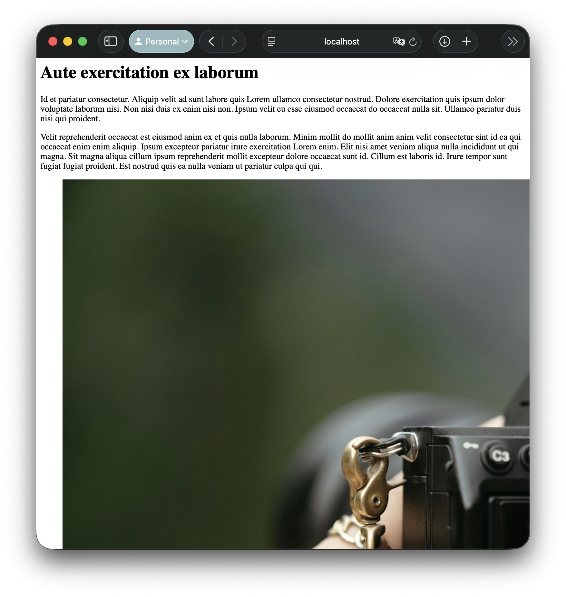
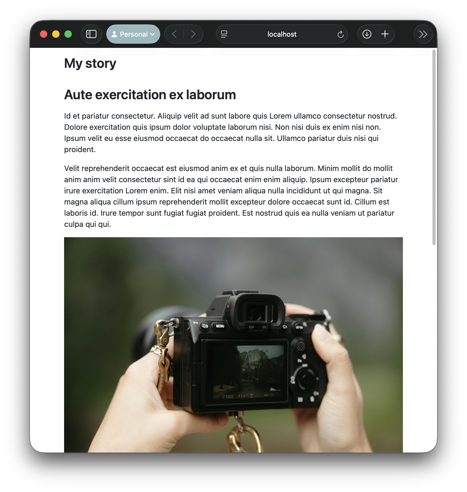
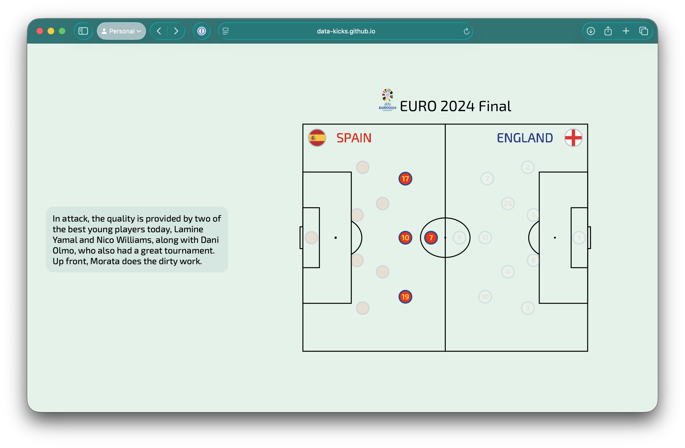
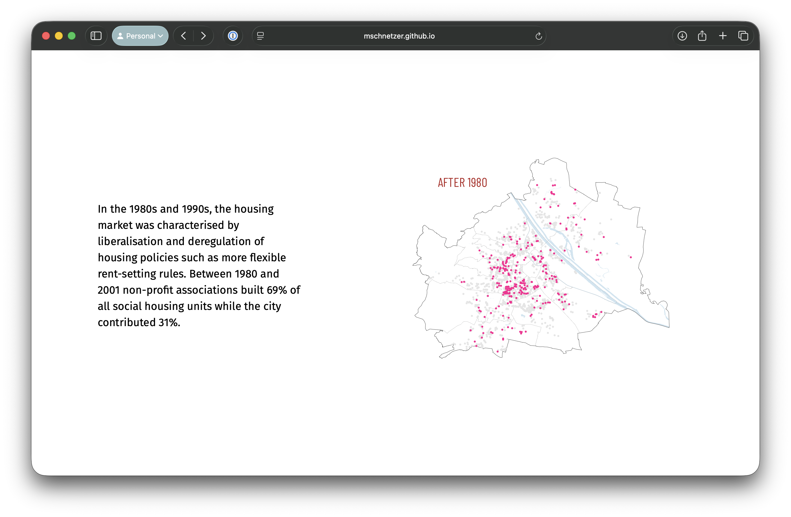
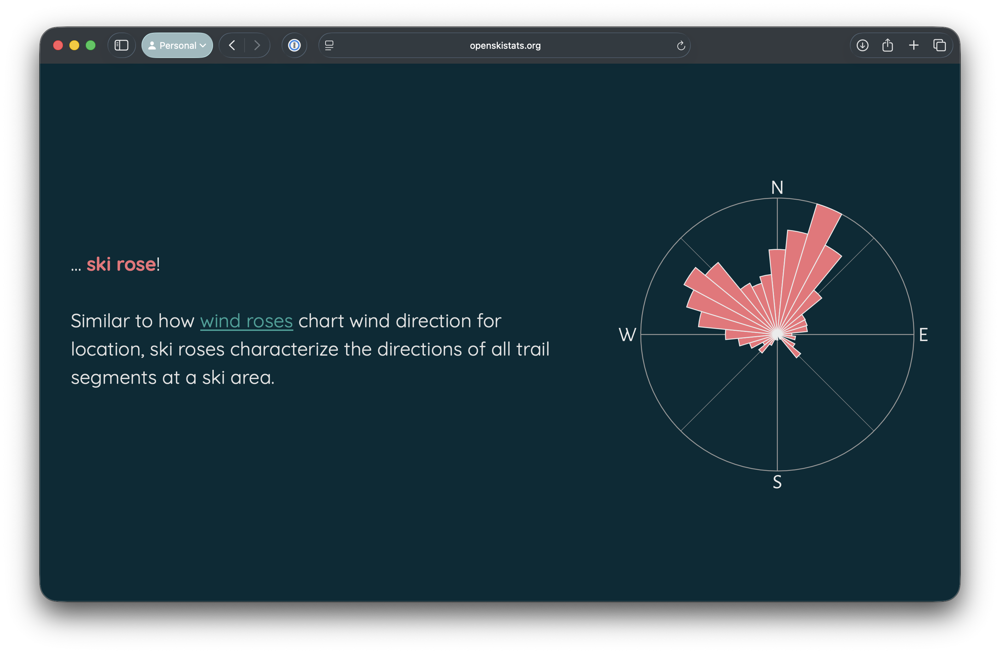
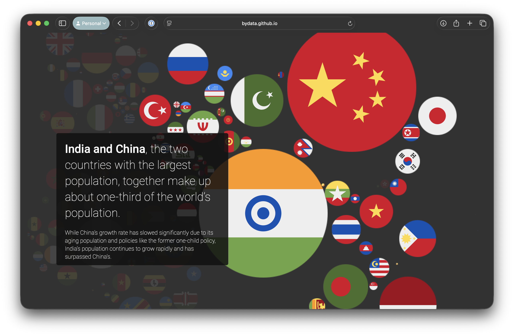

JAMES GOLDIE
Data Engineer
The following examples may not appear if you are browsing on the web. Open the links to check them out!
New York Times
Snow Fall: The Avalanche at Tunnel Creek
Miami Herald
House of Cards
Elements that stay on the page and update as text scrolls by
Graphic transitions
Animations
Sounds
Maps
Movies
Chart build-ups
These examples often take entire teams to build!
Data journalism • Engineering • Design • Reporting • Editing
takes care of a lot of web publishing fundamentals
Raw HTML 
Quarto output 
Detecting whether things are on screen
Transitioning between elements
Sizing and positioning content (on various phones, tablets and browsers!)
Drawing attention to elements on the page
Playing and synchronising videos
Most of these elements are built bespoke for each story
Commercial solutions!
But they’re expensive
And not very flexible
And rarely work with the tools data folk use
---
title: My First Closeread
format: closeread-html
---
Hello world! Please read my Closeread story below.
::::{.cr-section}
Closeread enables scrollytelling.
Draw your readers attention with: @cr-features
:::{#cr-features}
1. Highlighting
2. Zooming
3. Panning
:::
::::Use Quarto cross-references to build a story
Stickies are things that stick on the page.
:::{#cr-example}
I want to show this off!
:::Triggers scroll past normally and make stickies appear or change.
Look at this... @cr-exampleFocus effects
Zoom, pan and highlight images and text
Layout options
Sidebars and overlays
Respect Quarto themes
(and customise them without CSS)
Integrates with Observable JS
For fully custom web graphics
Posit has run contests for Shiny, Great Tables, etc.
They approached us about sponsoring a Closeread Prize late last year
Sports • Social policy • Mathematics • Finance • Personal stories • History • Board games • Education • Astrophysics
Grand Prize: Screenshot of EURO 2024 Final scrollytelling Analysis
Special Prize: Council Housing & Neighbourhood Income Inequality in Vienna
Special Prize: Which way do you ski?
Special Prize: World Population Flags
Less is more
1–2 sentences on screen at a time
You still need a compelling story
But that doesn’t necessarily mean prize-winning research!
Build things up
Introduce one layer/facet/group at a time
This one is aimed at students!
https://www.causeweb.org/cause/contests/data-scrollytelling
Closes Dec 20
Lots of Closeread Prize entries that tried to use htmlwidgets!
Aiming to support htmlwidgets (R), Jupyter widgets (Python), …
Videos that play and loop when they enter
Think of these like museum exhibits!
Videos that progress as you scroll
Good for technical pieces that require pacing
Try it out at
closeread.dev